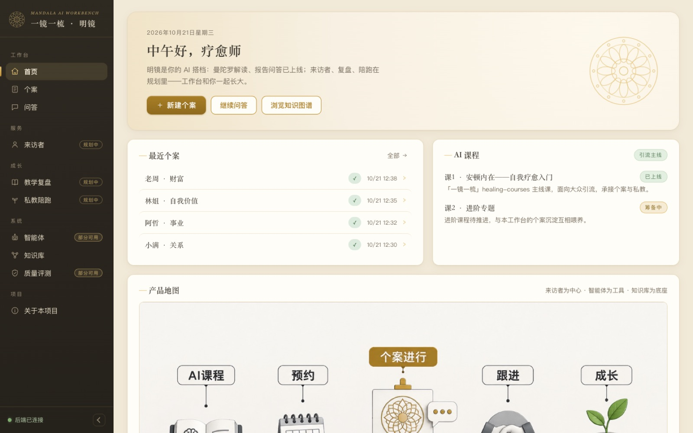
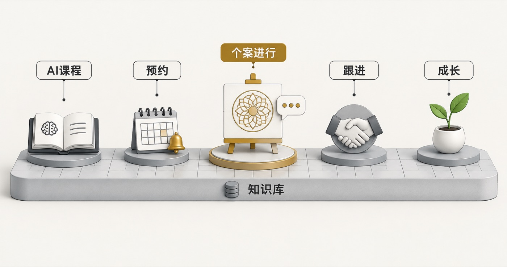
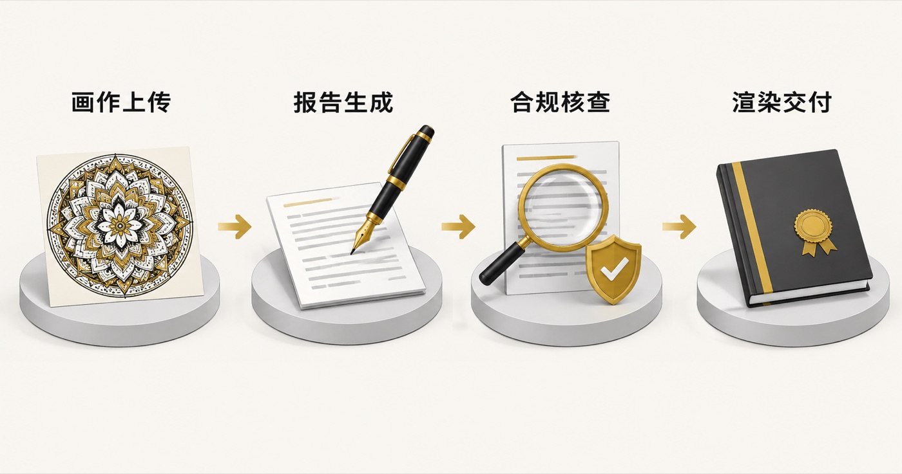
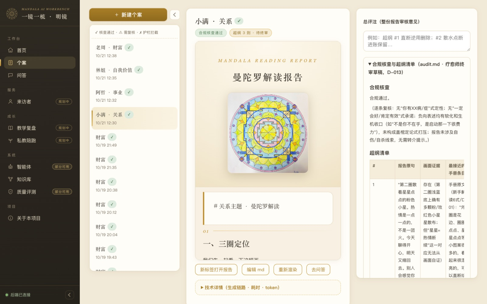
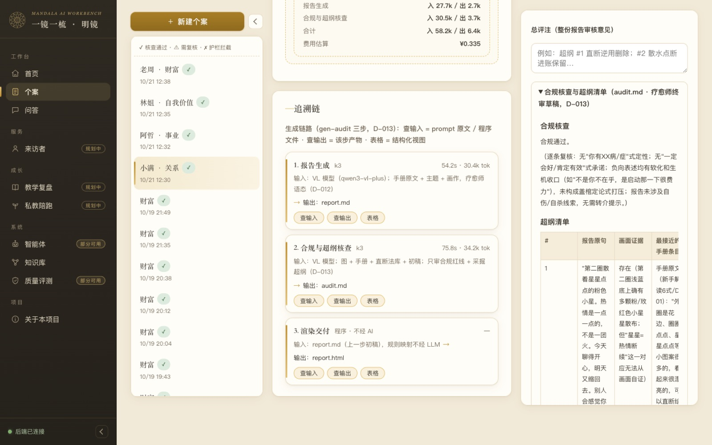
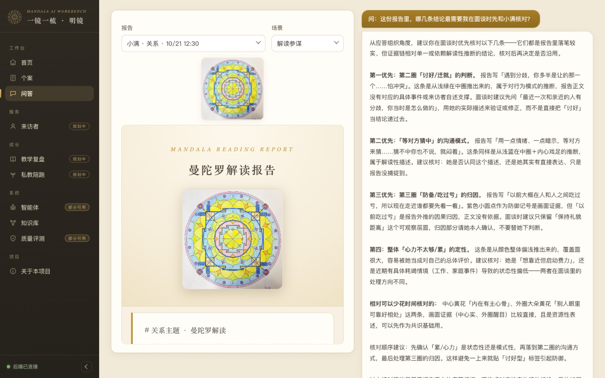
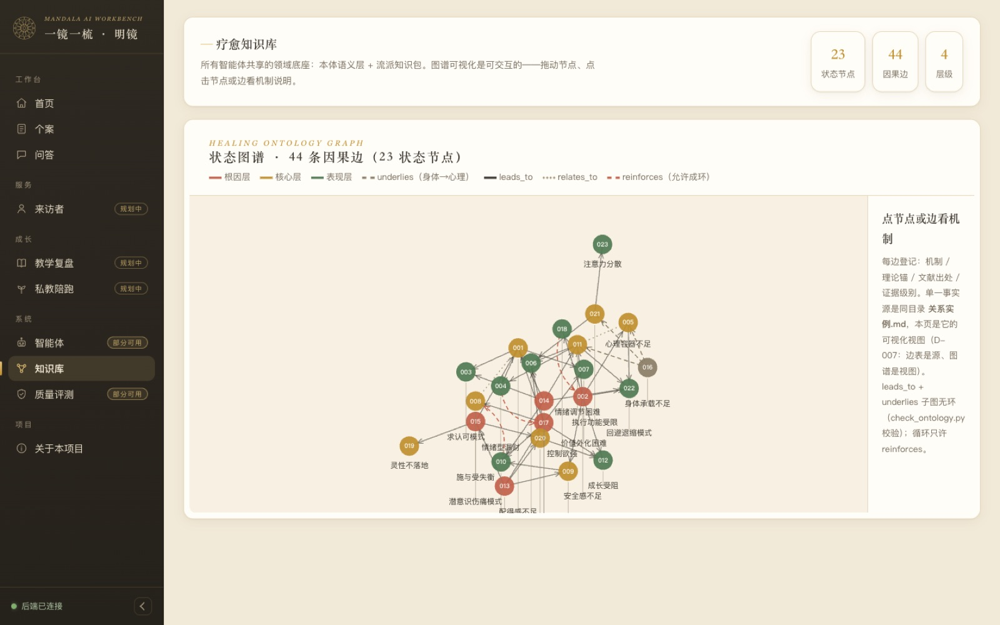
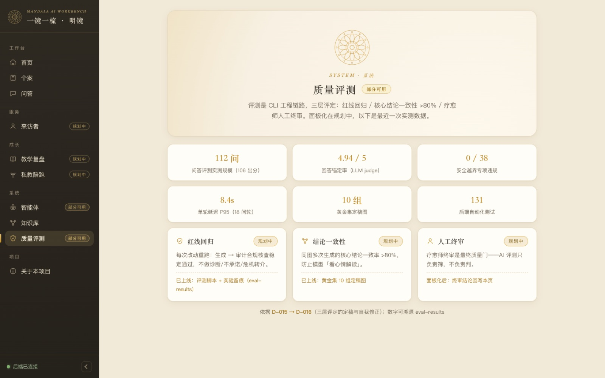

PRODUCT SHAPE
一个完整的工作台，不只是两个 demo
左侧边栏按「工作台 / 服务 / 成长 / 系统」分组：已上线的解读、问答、知识图谱 与规划中的来访者、教学复盘、私教陪跑同栏呈现——完整产品形态本身就是设计能力的展示， 「规划中」徽标是诚实的 roadmap，不是伪装的功能。


设计取舍
规划中页面不堆空话：每个模块写清定位、与现有功能的关系、排期依据（精确到 D-xxx 决策编号）。「为什么现在不做」和「做了什么」一样，都是产品判断。
视觉系统是「东方外壳 + 精工内核」：米色鎏金与交付给来访者的报告同族，控件全部定制（拖拽上传、分段选择、定制下拉），零 emoji 图标。
CORE PIPELINE
gen-audit 三步链：生成 → 合规核查 → 确定性渲染
报告生成不追求一步到位的「聪明」，而是把创造与核查拆成两条独立的 AI 调用： 生成臂自由解读，审计臂只审合规红线并采掘「超纲」论断，最终判断永远在疗愈师。



REPORT QA
看着画作和报告提问
问答助手服务两个真实场景：解读参谋（吃透报告）与应答准备（起草给来访者的话）。 左栏是画作与报告原文，右栏是对话——提问时证据就在眼前。回答锚定报告原文，超界内容主动标注。

问：这份报告里，哪几条结论最需要我在面谈时先和小满核对？
「第一优先：第二圈『讨好/迁就』的判断。这条是从浅绿在中圈推出来的，属于对行为模式的推断， 报告正文没有对应的具体事件或来访者自述支撑。面谈时建议先问『最近一次和亲近的人有分歧，你当时是怎么做的』， 用她的实际描述来验证或修正，而不是直接把『讨好』当结论递过去。……以上核对建议是基于报告正文的应答组织， 不构成对来访者的评估结论。」
真实回答节选：锚定报告原句、给出核对方法、主动收口边界
KNOWLEDGE BASE
所有智能体共享的领域底座
本体语义层把疗愈知识建成图谱：23 个状态节点、44 条因果边、4 个层级， 每条边登记机制、理论锚、文献出处与置信级别。图谱是视图，边表才是源——一致性由脚本强制校验。

EVALUATION
质量不是感觉，是跑出来的数
评测是 CLI 工程链路，三层评定：红线回归 / 核心结论一致性 >80% / 疗愈师人工终审。 所有数字可溯源到实验留痕。

DECISIONS
决策日志是这个项目的一等公民
实测假阳性率 94% 后，审计臂从「找错员」改为「合规员 + 采掘员」——质量判断交还疗愈师，超纲清单变知识库矿源。
「锚定事实层」上线三天被证明不可维护，新增 D-016 正式撤销 D-015。决策日志保留完整时间线，不掩饰。
工作台无 React、无 npm、无 CDN——一个 uvicorn 进程托管全部静态文件与 API。刻意约束，知道什么时候不引入复杂度。
THREE LENSES
同一个项目，三种读法
AI 产品经理
- 从疗愈师真实工作流拆产品形态：live 与规划中同栏，roadmap 即设计文档
- 「审计臂收窄」是把模型能力边界翻译成产品边界的实例
- 每个规划中模块带排期依据——优先级是判断，不是 backlog 顺序
Agent 应用开发工程师
- gen-audit 双臂架构：生成与核查职责分离，prompt 与产物全量落盘
- 确定性交给代码（OpenCV 预处理 / 渲染），判断留给模型与人
- 问答锚定率 4.94/5、越界 0/38，评测驱动迭代而非感觉驱动
FDE / 交付工程师
- 领域知识工程化：本体图谱 + 校验脚本，知识库有护栏不是文档堆
- 单进程 localhost 交付：用户双击即用，部署复杂度压到零
- 131 个测试 + 决策日志 + 实验留痕：可交接、可审计、可回溯
边界与诚实
明镜是辅助工具：不做诊断、不做承诺、不越界，危机信号立即转介，最终判断永远在疗愈师。 所有截图中的「来访者」均为演示数据；评测画作图像不进入版本库；个案数据不离开本机。 这个页面本身也一样克制：展示的是真实在跑的系统，截图即现状，没有为作品集单独做任何平时不存在的功能。